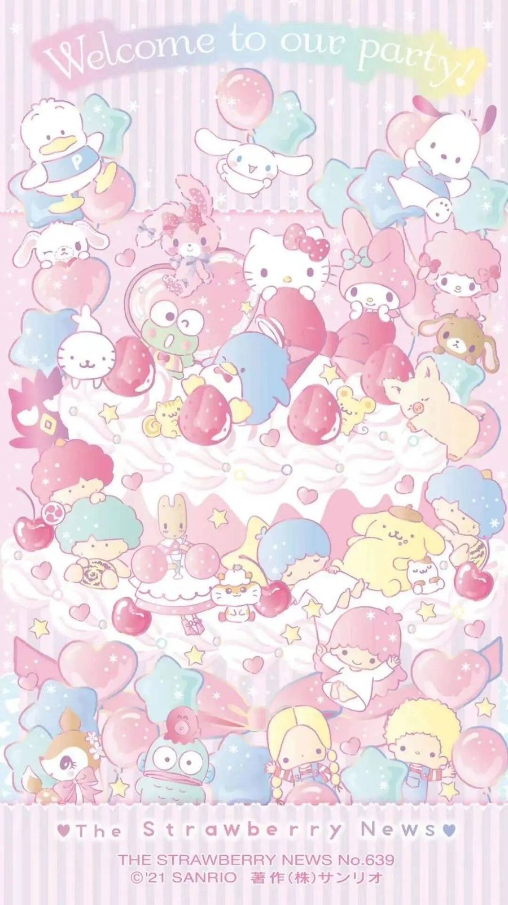
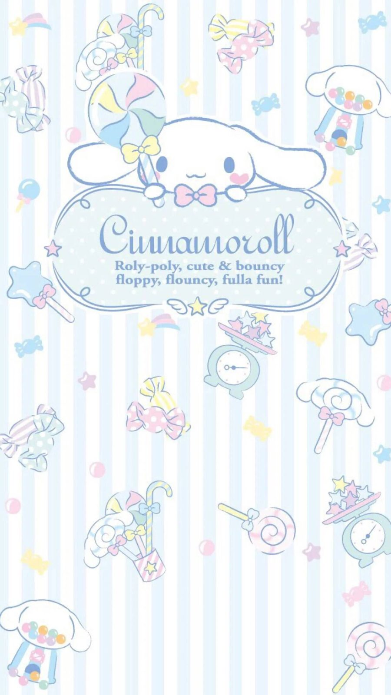
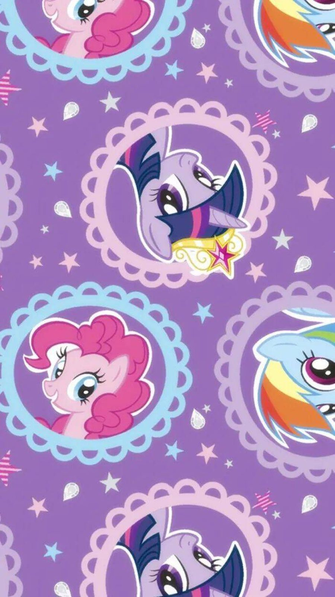
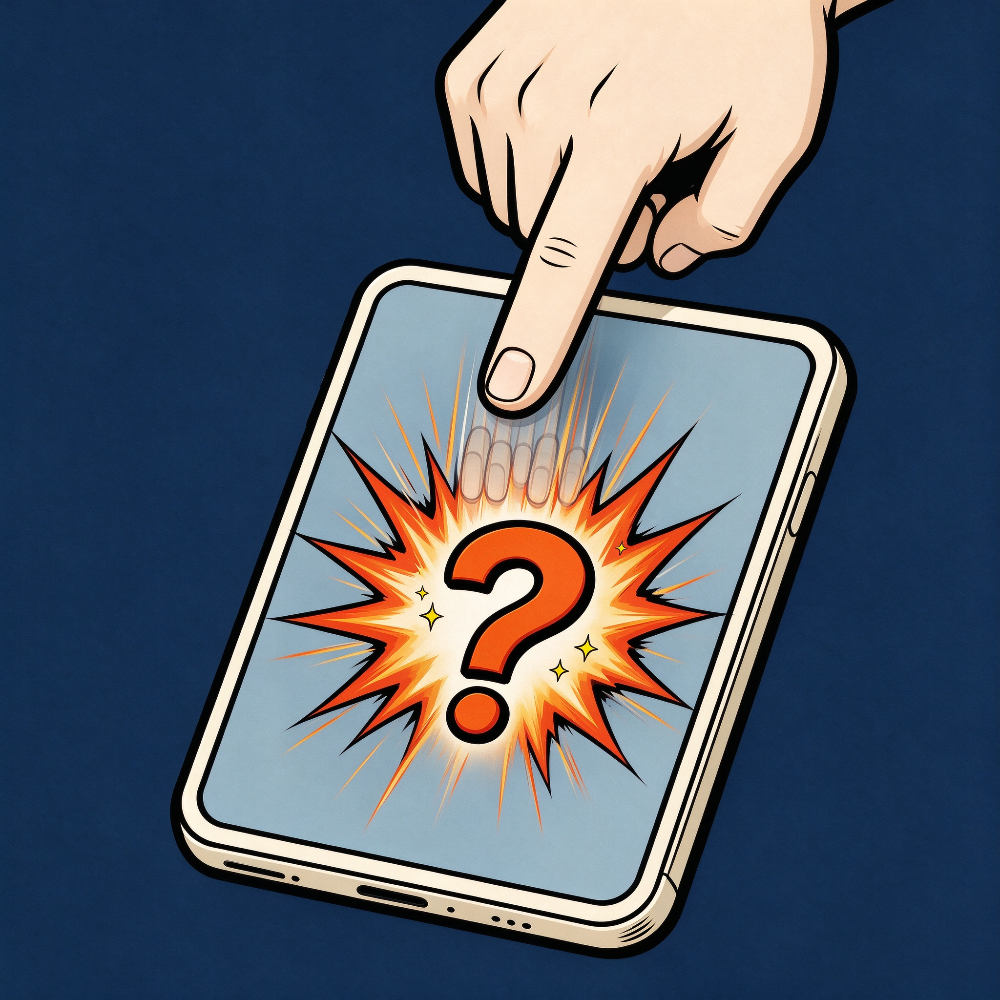

01
它为什么存在
一个「讨厌手机的人」做的统计 App：先承认自己点得太多了，再把它变成一个能看懂的数学事实。
「我每天点手机的次数太多了，所以我要测一下每天到底点多少次。所以名字叫手机之问。」
承认问题先把「点了很多次」变成一个真实的数字。
看见频率点击、滑动分别记录，碰屏为两者之和，知道每天到底点多少次。
每天一问次日早报推送昨日战报，附一句温和的提醒——不是批评，是问候。
每天，你的手机都在问你：今天，你点了几次？
一个「讨厌手机的人」做的统计 App：先承认自己点得太多了，再把它变成一个能看懂的数学事实。
点击、滑动分别计数，碰屏自动等于两者之和，三种数字按天存档。
点击 / 滑动 / 碰屏按应用统计今天的点击与滑动，看看时间究竟点进了哪些 App。
应用维度每段使用可以随时保存成一条记录，方便对比不同时段的点屏强度。
会话记录每天 8:00 推送一条状态栏通知：昨日点击 / 滑动 / 总次数 + 一句温馨建议。
状态栏通知统计原理写进 App 内：系统广播一声、App 听见就 +1，不读屏、不上传、纯本地。
本地存储这就是 App 的工作方式：系统广播一声，App 听见就 +1。下面的按钮帮你模拟。
点击、滑动分别 +1；碰屏 = 点击 + 滑动之和，随两者联动同步 +1。界面只有这三个数字，不另设「合计」行。
全程不监视你的屏幕内容，只看系统发出的事件广播——「一次触摸被处理完」，就记一次。
| 计入 | 不计入 | 原因与说明 |
|---|---|---|
| 点击（按钮、图标、列表项等） | 打字时的字符按键 | 系统只在「一个控件被判定完成一次点击」时广播；输入法按键属自绘界面，多数不产生标准广播——所以打字几乎不计入，这是我实测到的现象。 |
| 滑动（滚动手势本身） | 刷视频、刷信息流时的内容滚动 | 系统广播的是「滚动开始」事件；视频 App 等内容多在自己内部处理滚动、不走标准广播，因此刷视频的滑动不计入——同样与我实测一致。 |
| 碰屏（点击 + 滑动之和） | — | 点击、滑动分别独立计数；碰屏为两者之和，随点击 / 滑动联动 +1。界面只显示这三个数字，不单设「合计」行。 |
隐私边界：App 不读取屏幕内容、不录制、不上传任何事件明细；计数结果只写在本机数据库里。
每套主题不只是换颜色——还有整页背景插画、专属主色与本色点击涟漪。



注：商务藏青为纯色底（无自绘水印）；三套官方插画主题的主页与子页各配不同背景图。
主界面从上到下依次是：品牌与「换主题」、今日统计主色卡（点击 / 滑动 / 碰屏幕）、当前段、入口菜单、统计原理说明。以下四台手机展示四套主题在主界面的真实样子（数字为示例；界面按 App 实际布局与素材还原，已开启统计服务状态）。
从「黑金高级感」出发，走过方向 A / B、黑金手指与漫画问号，最终回到黑金爱心： 这次是去掉左上光影后的最终定稿，软件的名字就叫手机之问。

漫画问号v2.0.4 曾装机无障碍服务监听点击，SQLite 按天分行，30 天柱状图。
点击 / 滑动 / 碰屏分开统计，支持手动存档，取消延迟改为立即写入。
今日 App 排行 + 亮屏次数 / 屏幕使用时长。
藏青 #1B3A5C + 香槟金 #BFA15F，卡片描边分层。
三主题内置切换 + 高级图标（藏青渐变方块 + 金色涟漪）。
每日 8:00 早报通知；首页加入统计原理与隐私说明；移除 30 天柱状图。
删顶部三切换按钮、「今天」标注，主题只保留商务藏青。
商务藏青 / Hello Kitty / 原神 / 小马宝莉，恢复「换主题」入口。
全面改用官方插画做页面背景，自绘装饰全部删除。
软件正式改名手机之问，包名不变；黑金爱心图标。
小马宝莉、原神全部换新背景；图标回旧版。
移除商务藏青自绘水印；全软件按钮与卡片加上点击涟漪。
涟漪颜色改为各主题主色（藏青 / 粉紫 / 天青蓝 / 薰衣草紫）。
漫画问号图标装机：手指狂点屏幕，炸出问号——「点得越多，问号越大」。
黑金爱心·去光影版装机：黑金 VIP 质感回归，移除左上光影，画面更干净。
| 表 | 字段 | 用途 |
|---|---|---|
| taps | date（主键）、clicks、swipes、touches | 每天三口径总量 |
| current_session | id、clicks、swipes、touches、start_time… | 本段未存档计数 |
| sessions | 自增主键、三口径、起止时间… | 手动存档的会话记录 |
| app_taps | date + package（联合主键）、clicks、swipes | 今日 App 排行 |
| screen_stats | date（主键）、wake_count、active_seconds | 亮屏次数与使用时长 |
App 不获取屏幕内容、不截图、不录屏，只处理系统事件广播。
所有计数仅写入本机 SQLite，无账号、无云端同步、无任何网络上报。
同一签名证书持续升级，覆盖安装保留全部历史数据。
主题插画均为官方图片，仅限个人本地使用，请勿外传或商用。